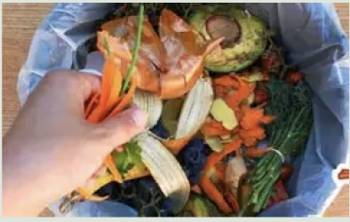
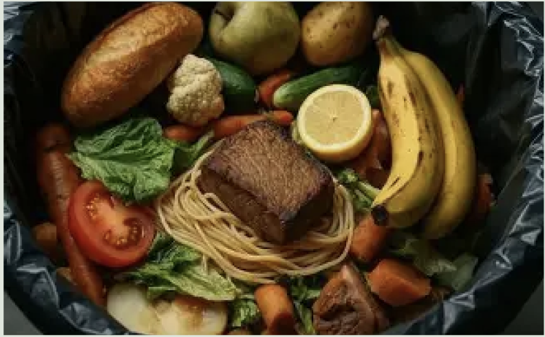
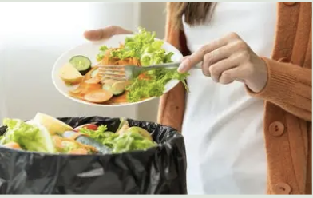

Info - Madspild
Hvad er madspild?
Madspild er mad, som kunne være spist, men som bliver smidt ud. Det sker både i private hjem, butikker og restauranger.
Hvofor er madspild et problem
Når vi smider mad ud, går ressourcer som vand, energi og arbejdstid til spilde. Samtidig bidrager madspild til unødvendig CO₂-udledning.
Madspild i Danmark
I Danmark bliver der hvert år smidt store mængder spiselig mad ud, især fra husholdninger. Derfor spiller vores daglige valg en vigtig rolle.


